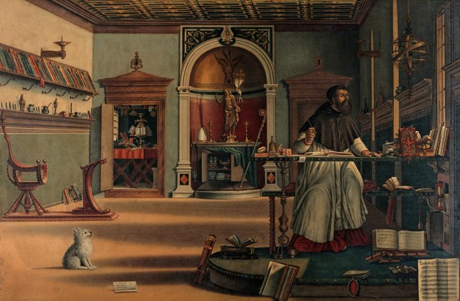
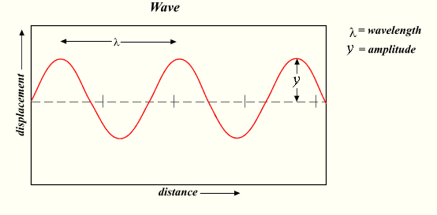

Purpose and Telos as a Mimetic Object
Delight
Mental image of beauty
e.g., grandfather, and memory of grandfather
Is one more valuable than the other?
Mental and physical pleasure
Mental pleasure, e.g., memory of grandfather
Physical pleasure, e.g., sight of grandfather
Learning
Learning through pleasure
Why?
Intimacy between our souls and our flesh
Classification of Pleasure
| Mental | Physical | |
|---|---|---|
| Object of higher pleasure | Memory of grandfather | |
| Object of lower pleasure | Sight of grandfather |
But this doesn’t seem right!
Augustine on Music

Who was Saint Augustine?
Saint Augustine was born in North Africa in 354 CE. Most notably, he is known for both his City of God, (De Civite Dei) and his Confessions, (Augustini Confessiones). Famously, Augustine’s mother, Saint Monica, was a devout Christian while his father was a Roman official. Being a Roman official in 354 CE, also meant that his father was a pagan a fact often reflected on by Augustine in his Confessions especailly Famously, Augustine’s mother, Saint Monica, was a devout Christian while his father was a Roman official. Being a Roman official in 354 CE, also meant that his father was a pagan a fact often reflected on with some expressions of regret by Augustine in his Confessions especailly.
Augustine is often known for his reflections on his youth and his conversion to Christianity. More importantly, much of his mature and independent philosophical work (not necessitated by duties of his office for instance) focuses on his theological reflections and philosophical claims regarding his ability to know about abstract concepts such as God, the soul, and the afterlife.
De Musica
We must not hate what is below us, but rather with God’s help put it in its right place, setting in right order what is below us, ourselves, and what is above us, and not being offended by the lower, but delighting only in the higher.
De Musica is one of Augustine’s lesser known treatises. More central to scholarly focus on his writings, are typically his theological claims, epistemology, what can be known and how, and his philosophy of mind, his theses of concepualizing the difference between soul and body. However, De Musica provides a unique insight into Augustine’s reflections on the role of music in his own conversion and other spiritual experiences. He begines with what might be called a commandment, or psychological admonition.
- Perception of the beautiful
- and its contrast against perception of evil
- How to do it?
This is an important claim. Consider two kinds of non-profit organizations. One is defined by all the things it is against, e.g., anti-war, anti-poverty, anti-racism, etc. The other defines itself by all the things that it is for, to promote peace, love, unity, etc.
Two Questions about Perception
- Can we improve the way we perceive the world around us?
- How does education foster better perception of the world around us?
But from his claims about perception, are those about what improves perception in such a way that it contributes to memory. Namely, we have first two kinds of event. Augustine admonishes us to focus on beautiful events and not ugly ones. But what are some practical ways in which we can focus on the one and not the other? While perception through experience enables one kind of reflection, there are other kinds of reflection that we are capable of, even if we have not had the experience.
Also as important, one aspect of what enables the right kind and object of perception, has to do with reflection. Is reflection merely a kind of perception where there is some object that once was external but now is internalized? For instance, consider what his says about the differences between his knowledge of his father and grandfather.
I think differently about my father whom I have seen and about my grandfather whom I have never seen. My thought of my father comes from memory, but my thought of my grandfather comes from mental movements arising out of other mental movements which are contained in memory.
When considering what kinds of reflections we are capable of, the next question is how do we improve our ability to reflect on the beautiful and not the ugly? For Augustine, this is the place of music and why God has given us the capacity for music. But in order to understand why music, we have to first think about what music is.
Our rhythmic or metric art, which is used by makers of verses, comprises certain rhythmical measurements according to which they make the verses.

For Augustine, there is an important relationship between random sounds, and time. What is the difference between a musical note, say ‘A’ as produced by the strike of a hammer on a piano string, and a child striking a mallet on a taut piece of wire? It helps to understand something about the metaphysics of music here. For instance, we might know that what we experience as sound, is a collection of vibrations either through the air, or another medium such as a piece of wood or metal. We typically measure these vibrations in the form of Hertz. The measurement, if I am not mistaken, is taken in a similar fashion to how we measure other waves such as radio, ocean, etc. I will not begin to make any further claims about the physics of sound, except to draw attention to rhythm as a measurement of time, and music as a measurement of sound in relationship to time. Therefore, if we hit a medium such as a piano string with a mallet or hammer, and it so happens to be taut enough such that upon being hit, it will vibrate in such a way that it produces a succession of waves that can be measured at 440 Hz, meaning 440 waves per whatever unit of time is selected as standard, then we will hear the note ‘A’.
Additionally, what we experience as different sounds, are the different frequencies at which these vibrations occur. In western music, most instruments are tuned to a standard frequency of 440 Hz.